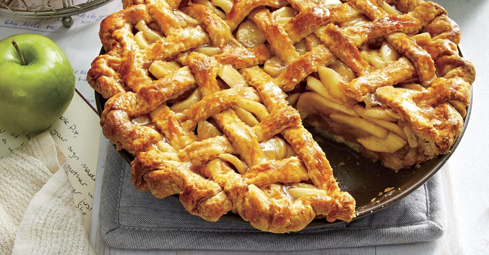
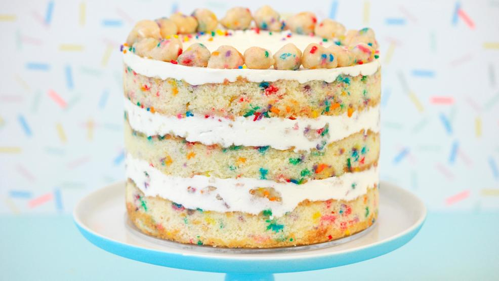

One of my all time favorite desserts to make is Apple Pie! Although Apple Pie is typically very common in the fall, you
can find me enjoying this dessert all year round. The apple tree in my backyard helps a lot with this!
Milk Bar

Another favorite of mine are Milk Bar cakes! Although I have not attempted to make one yet, it's definitely in my December plans for this year.
I actually got a Milk Bar cake for my birthday last year! Though these cakes look small, they pack great flavor and texture! It took me like 2 weeks to finish my
Milk Bar cake. Milk Bar also offers great ice cream and cookies that you should check out!
Currently
Currently I am nuturing a new found love for coconut desserts and I am so excited to create a couple coconut based desserts over the next couple of months.
As you can tell, I really love desserts! Whenever I travel, I ALWAYS look up the best dessert spots around me. Ice cream is also a must at every location I travel to.
/* facebook like button here */